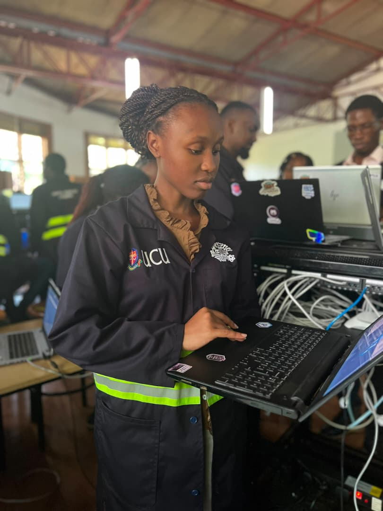
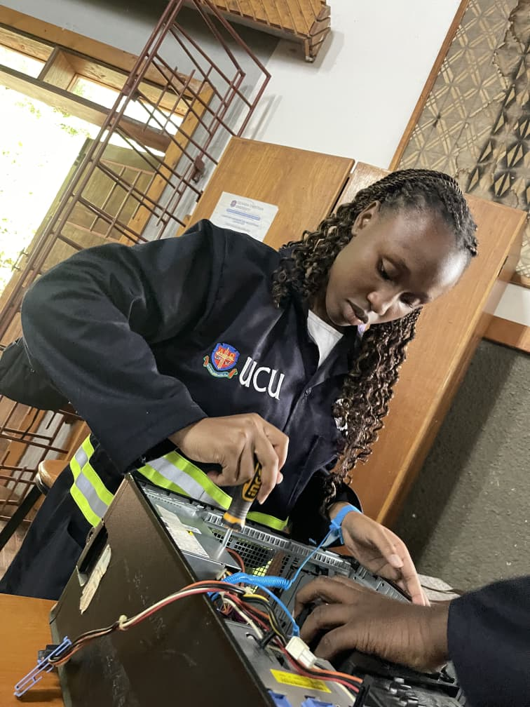
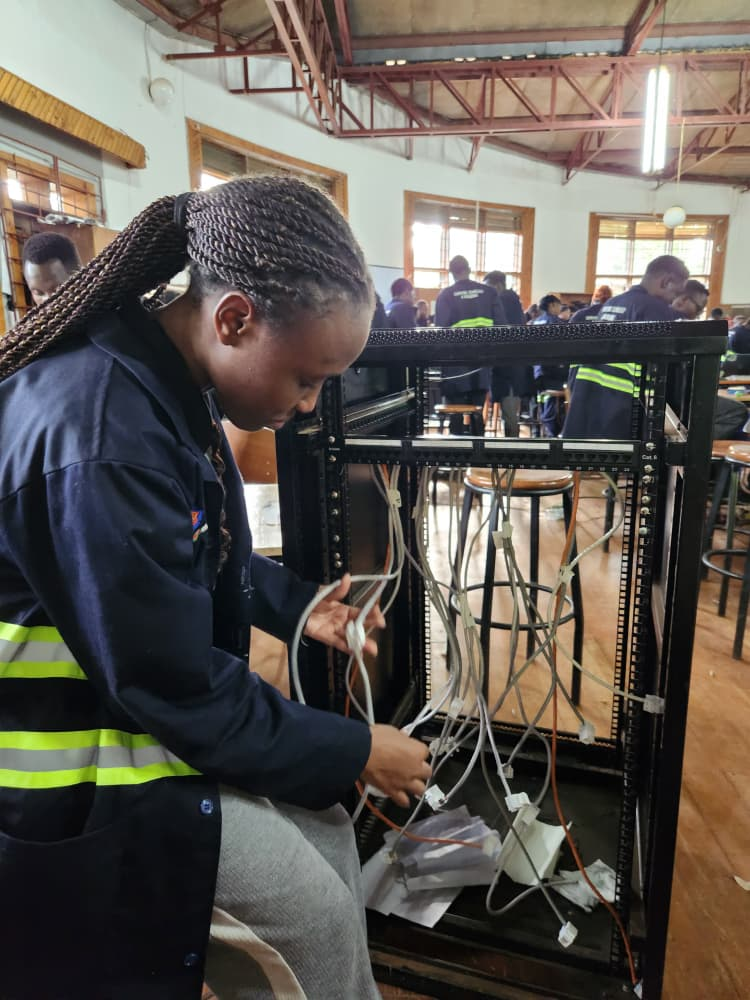

Future Projects & Visual Gallery
Hover and explore my conceptual roadmaps and documentation blocks below.
💡 Strategic Vision
Future Project Feature: The Smart Harvest Project
The Smart Harvest Project is an upcoming IoT-driven software concept targeting agricultural optimization. By combining my passion for **Web Development** interfaces with foundational **Networking infrastructure**, this system will monitor soil metrics (moisture, temperature) via wireless node sensors.
Data streams will feed directly into an interactive, beautifully customized pink and purple user dashboard, giving local farmers real-time notifications on irrigation requirements to minimize asset loss and boost production yields automatically.
Media Gallery Showcase
A collection of creative blocks and documentation snapshots. Hover to interact.


